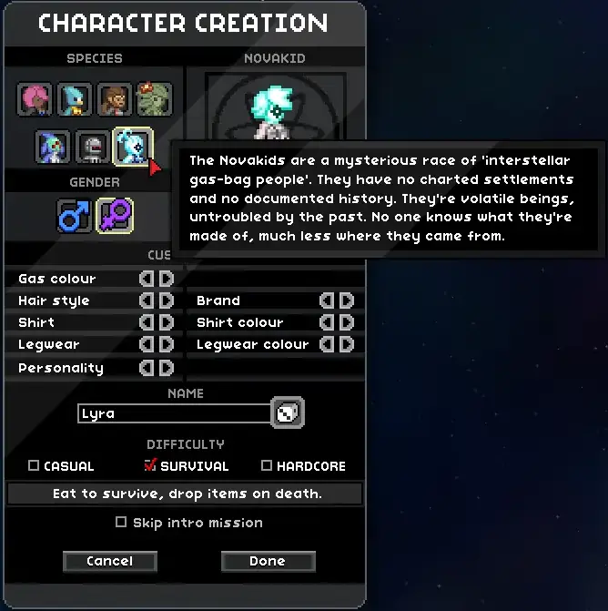
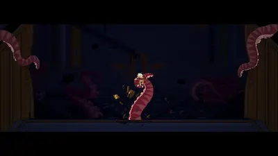
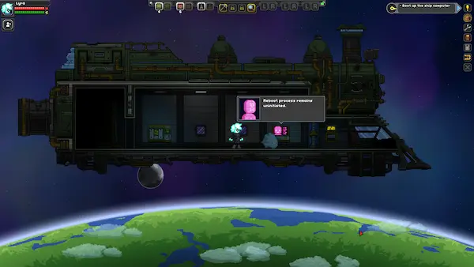
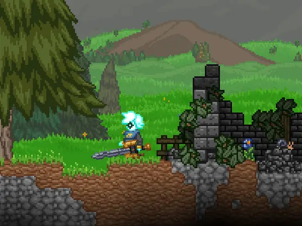

Starbound
Starbound was released July 22nd, 2016. You take on the role of protectorate graduate. At your graduation, however, things don't go as planned and you must leave your home-planet and find yourself lost in space with just some basic gear and a damaged spaceship. Your goal? Simple. Save the universe from the threat that destroyed your home. If you want to, anyway. This game, like all others found here on Squares Compared, is open-ended and has no locked-in goal. You can follow the story at whatever pace you like. Or not at all.
- Released: 07/22/2016
- Developed by: Chucklefish
- Published by: Chucklefish
- Made with: C++ (custom Starbound game-engine)
{kind=link}
Starbound, at first glance, might seem like a clone of Terraria or something. It's also a 2D
pixelated open-world survival-craft game. Unlike Terraria, however, Starbound is a little more
RPG focused. It has a questing system (including a main story quest-line), level-up system,
procedurally generated stats for loot and gear, and even a character customizer with multiple
different playable species.

The story is completely optional, but making a little progress will unlock some content. The
story quests revolve around scanning items from different species and defeating a boss that
is oppressing that species. You repeat this for all 7 species and then take on the final boss.
The final boss being the monster that destroyed your home in the opening cutscene.

Starbound is super relaxed with how the game progresses. Instead of proceeding with the main
missions, the player can just fly their spaceship wherever they please. The game takes place
in a massive procedurally generated universe containing countless star systems each with
planets, moons, space stations, asteroids, and many other places to land or at least orbit
around. All you have to do is complete the first couple of missions to fix up your damaged
ship.

The fun doesn't stop there! Starbound has a huge community of modders and plenty of custom
content to keep you playing for hours. The mods range from items to vehicles to enemies to new
playable species.

Players might want to choose Starbound over other games if they prefer:
{kind=link}
- Relaxed progression
- A sligtly more RPG tailored experience
- Exploring on a massive scale
- SPACE!